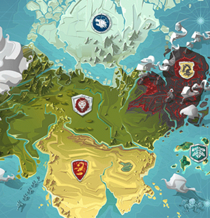
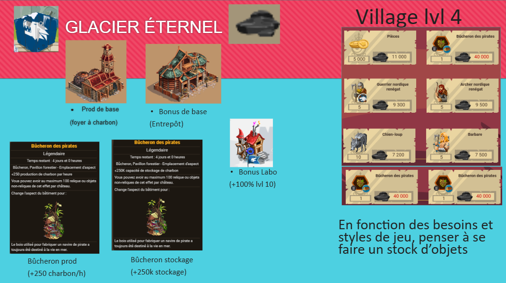
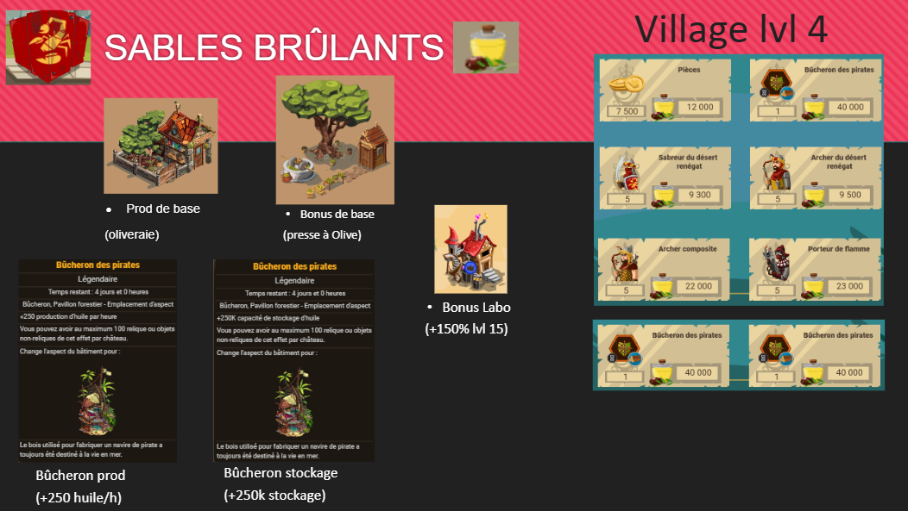
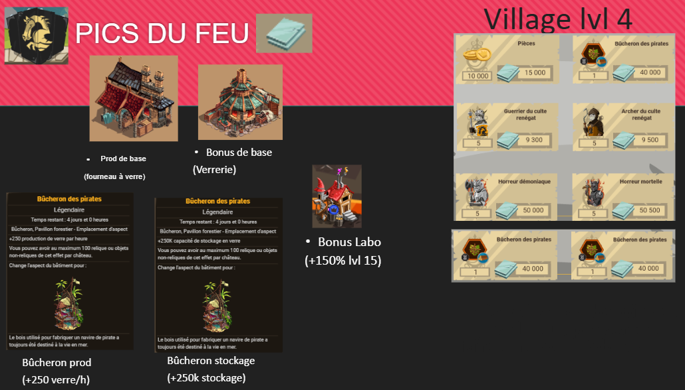

Ressources royaumes

Les ressources des royaumes correspondent aux ressouces particulières des trois royames ici (charbon, huile et verre). Le minerai de fer et l'aigue-marine ne font pas partie de ce tutoriel.
En détail
Comme cité plus haut, chaque royaume a SA ressource :
- charbon pour le glacier éternel
- huile d'olive aux sables brûkants
- le verre aux pics du feu
Comment fonctionnent ces ressources ?
Pour chacune de ces ressources, il y a un bâtiment par royaume qui la produit et un bâtiment qui augmente le pourcentage de production. Il est aussi possible d'en piller chez les pnj (tours).
Il est aussi possible d'en piller chez le camp du khan, ou les camps de béri lors de l'invasion de Bérimond.
Pré-requis
Afin de pouvoir produire ces ressources, il faut avoir le village (au-dessus du cp) niveau 1 au minimum. Il devient alors possible de produire la ressource en question et de l'échanger contre des récompenses. Plus le niveau du village est haut, plus les récompenses seront variées.
À noter qu'au niveau 70 et si la pièce d'équipement unique est prise, il est possible d'échanger 40k de la ressource contre un objet de construction d'apparence (bûcheron-pavillon forestier) pour stocker 250k ou produire 250 de plus par heure.
Voici la répartition des bâtiments de prod/pourcentage :
Production :
- foyer à charbon pour le glacier
- oliveraie aux sables
- four à verre aux pics
Pourcentage de prod :
- entrepôt à charbon au glacier
- presse à huile aux sables
- Verrerie aux pics
Par royaumes
Glacier éternel

Sables brûlants

Pics du feu
